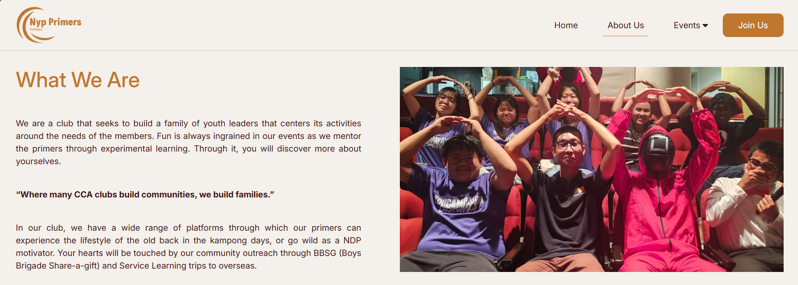
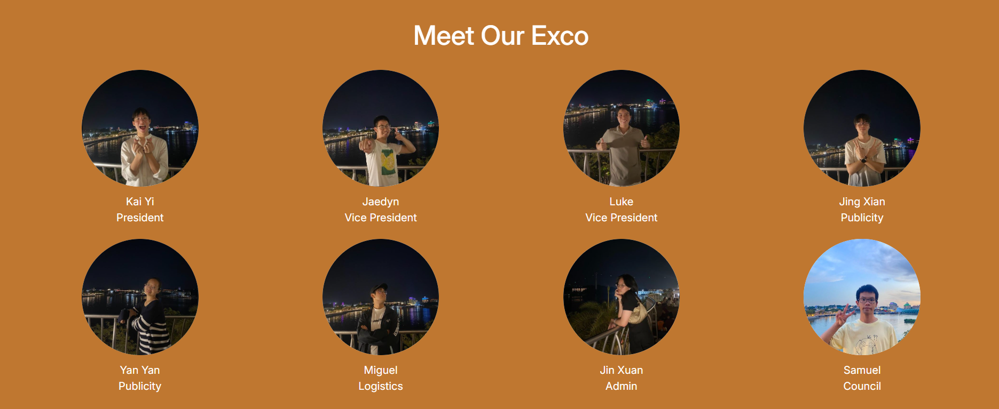
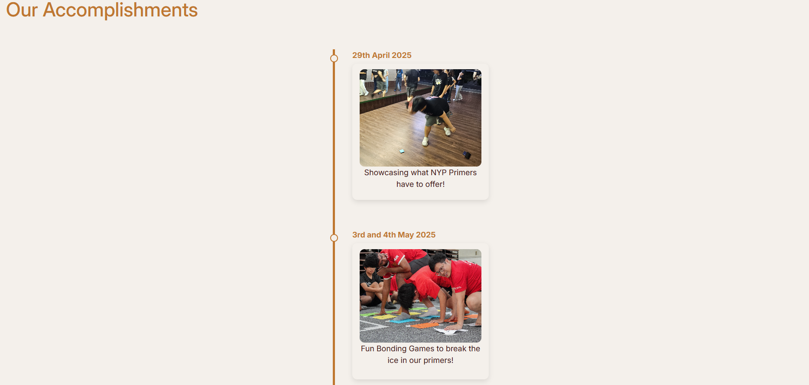
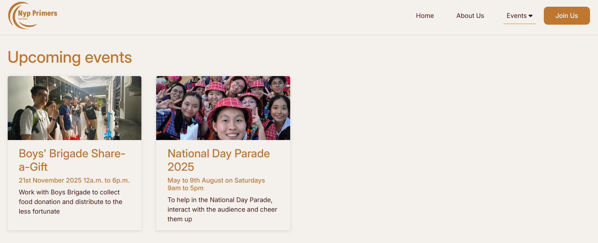
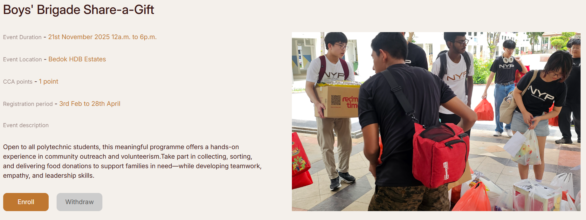

Focus of the Project
The primary focus of this website is UX design.
A total of 16 design prototypes were made to determine
the most suitable format to convey information to readers, structuring and formatting the information in a way that users can get a clear grasp
of NYP Primers just by skimming through the web pages.
Technologies used
HTML, CSS, JavaScript, Bootstrap
Project description
This project is a public website for NYP Primers, a school CCA club.
The target users of this website are:
- new NYP students who want to know more about NYP Primers
- NYP Primers members (to enroll/ withdraw from events)
The purpose of this website is to showcase what NYP Primers is and to facilitate club activities.
The color theme used in this website is the sunset color to reflect the warmth of NYP Primers.
This project includes a total of four pages:
- Home Page
- About Us Page
- Events Page
- Account Details Page
This is just a front-end website. Everything here is hard-coded.
Home Page
The home page is designed to give an overview of what NYP Primers is and a little sneak peek into other pages.
This page is carefully designed with the right amount of information to keep the users engaged.
Very little amount of information will lead to uninformative home page, while overloading information can scare the user away.
This is the landing page of the website, and this section of the home page is to give the users a brief explanation of what NYP Primers is.
Two call-to-action buttons "Join Us" can be found, prompting the user to join NYP Primers club.
Scrolling down, users will see this 'What We Are' section, which is a sneak peek of the 'About Us' page.
Clicking the 'Learn More' button will lead the user to the 'About Us' page.
Scrolling further down, users will be greeted with this 'Events' section, a sneak peek of the 'Events' page.
Clicking on the event cards will lead the user to their respective sections at the 'Events' page.
Then, the footer can be seen marking the end of the 'Home' page.
About Us Page
This page aims to show the users what NYP Primers is like and introduce the core members of NYP Primers along with its accomplishments.
This page has more detailed information compared to home page because this is where users actually learn about NYP Primers.

The first section users will see is "What We Are" section.
The information is formatted clearly to give users a sense of structure and clarity, so as to not visually overwhelm them with information.

Then, users will be introduced to the current exco members of NYP Primers.
This also is structured and designed with careful thought to not overhwhelm the user with names and positions.

The accomplishments of NYP Primers will be listed at the end of the page.
A timeline format is used to list the accomplishments to give the readers a clear sense of accomplishments over time.
Events Page
The purpose of this page is to share the events and activities held by NYP Primers.
This page is designed in such a way that users get a clear overview of all the events first,
before they learn about the details of each event.

The event overviews are catgorised into two groups: upcoming events and recent events so that readers get an understanding of the events timeline.
Each event overview is then displayed in a card to give the readers a clear and consistent structure.
In each card, an image is added to engage the engage the readers and the right amount of sentence length is used to give the readers a clear
summary of what the event is about.
If the readers want to learn more about an event, they just need to click on it, and they will be led to the following event details section.

In the event details section, the information are clearly formatted and labelled so that readers coukd skim through the details.
In addition, the key information is written in primary color to capture the attention of the readers as they skim.
Account Details Page
This page is meant to show the account details of NYP Primers members.
Similar text fields are grouped together and arranged in a logical flow for seamless transition between the text fields.
In addition, a subtle line is added between the personal detail text fields and emergency contact text fields so that readers
know that they belong to two different logical groups.
This is the account details page, where members of the club can see their details and the CCA points they have earned.
Consistent grouping is used here as well, where the personal details are shown in a different column from the emergency details.
The same subtle line is used in this section, this time to separate the member details and the CCA points.
Members will also be able to view their enrolled events as well.
Table format is used here to give a compact view to the readers.
The upcoming and recent events are separated in different tables so that members can find what they want easily.